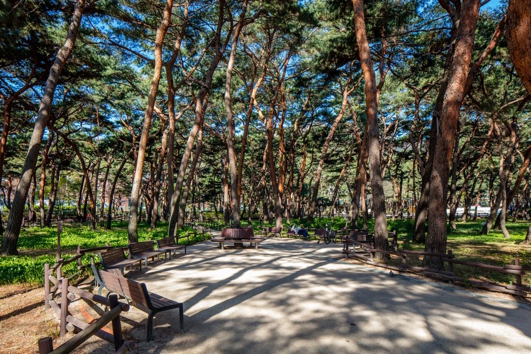

재생기로 건너뛰기
숲에서 듣는 동네 이야기
우이 솔밭공원
02

02
솔그늘길
삼양로
1
2
3
4
© OpenStreetMap
평지에 남은 소나무 숲
걸음을 멈추고 가까운 소나무 두 그루의 줄기를 비교해 보세요.
│◂
▶
▸│
0:00
자막
01
삼양로 진입광장
02
솔그늘길
03
생태연못과 실개울
04
장기·바둑 쉼터
이야기 자막
닫기
자료 출처
닫기
사진
서울경관기록화 사업 2020, 서울특별시
. 재킷 크기에 맞춰 잘라 표시했습니다.
공원 배치
강북구 공식 안내도
위치 자료
© OpenStreetMap 기여자
한국어 합성 음성